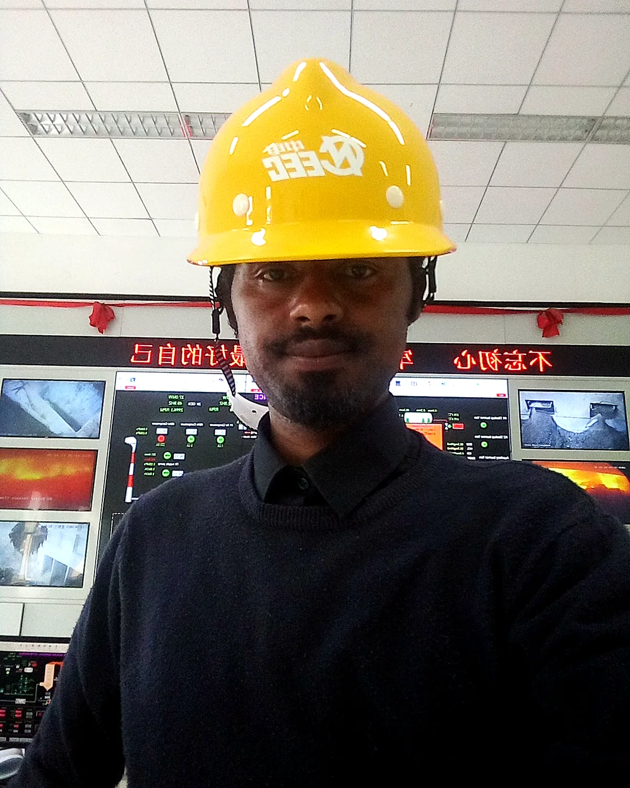
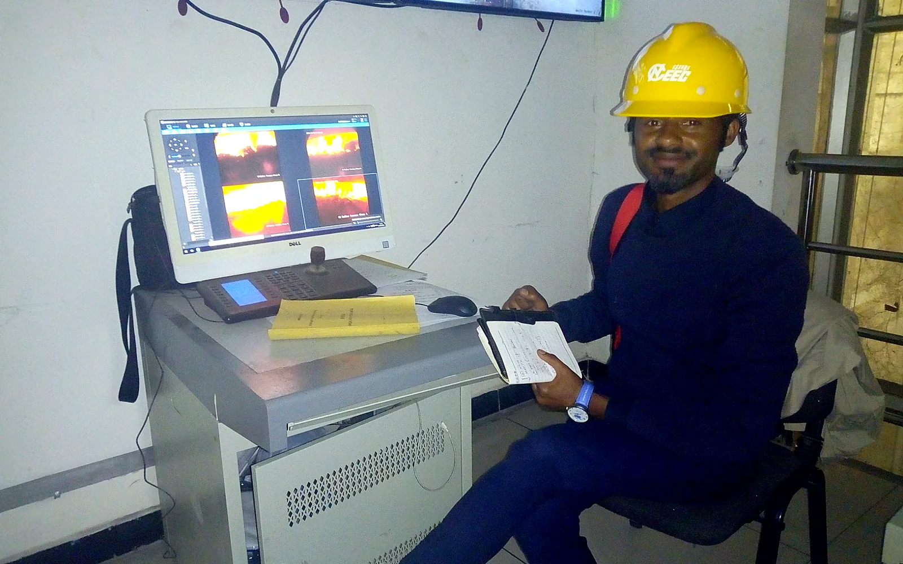
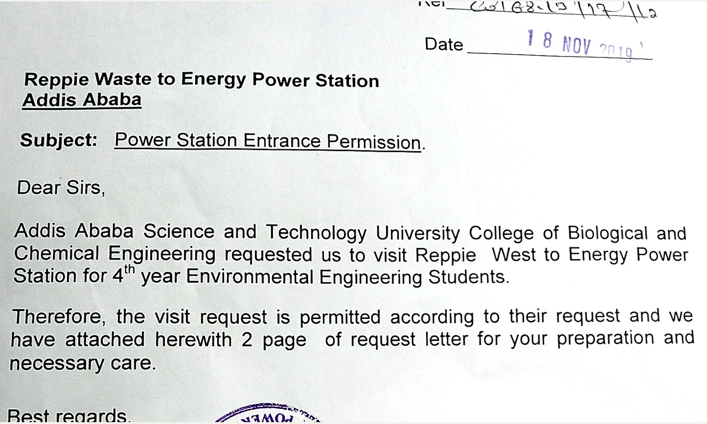
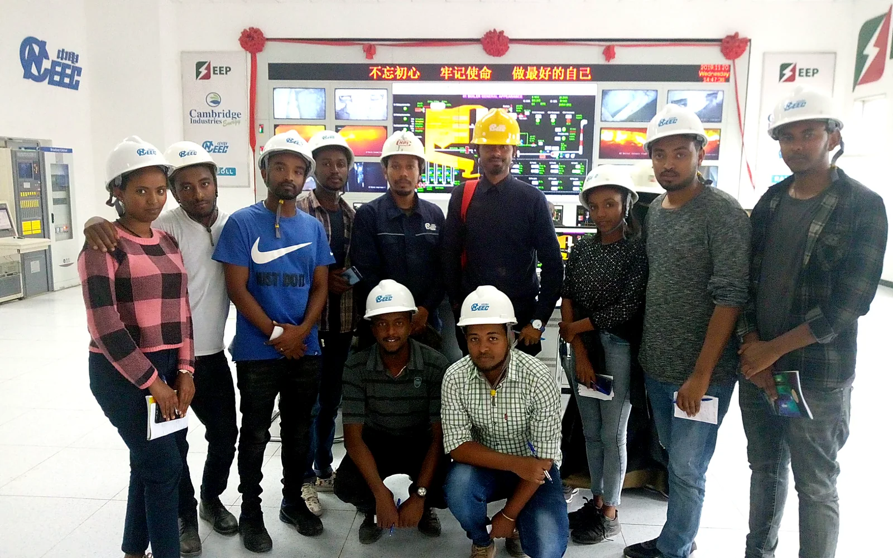

African waste-to-value investment advisory
Turning waste streams into bankable energy opportunities.
I support investors, developers, public institutions and communities to move bioenergy and waste-to-energy opportunities from initial screening through technical feasibility, business modelling, design development and investment readiness.

Available for Africa-focused assignmentsPre-feasibility • due diligence • project development
Technical depth + commercial discipline
Bioenergy development as a service
I combine energy engineering, environmental analysis, project finance, business development and capacity building. The objective is not to force a preferred technology, but to identify the conversion route and delivery model that genuinely fit the waste stream, end-use demand, local institutions and financing environment.
Open the print-ready capability statement“The strongest waste-to-energy project starts with dependable feedstock, a realistic offtake, environmental safeguards and an operating model that can survive after construction.”
Dr. Mintesnot Gizaw TerefeEnergy & Climate Scholar • Project Development Advisor
Feedstock intelligence
Waste characterisation, quantity and seasonality, moisture and heating value, collection reliability, competing uses, contamination and supply-chain risk.
Technology fit
Screening of anaerobic digestion, biomass combustion and CHP, controlled MSW conversion, gasification or other routes against local feedstock and operating capacity.
Bankability analysis
Mass and energy balance, CAPEX/OPEX structure, revenue stack, tariff and offtake, sensitivity, NPV/IRR, DSCR and risk allocation.
Responsible delivery
Environmental and social safeguards, emissions and residue pathways, lifecycle planning, stakeholder engagement, training and local capability transfer.
Flagship field experience
Reppie Waste-to-Energy engagement
My Reppie-related work combines field observation, academic research, student industry exposure and technical inquiry into feedstock performance and plant-generation optimisation.

Field access
Formal plant-entry permission and technical visit
The supplied Ethiopian Electric Power letter records permission for an AASTU fourth-year Environmental Engineering technical visit in November 2019.
Applied inquiry
Feedstock efficiency and generation performance
Engagement focused on the relationship between heterogeneous municipal waste, conversion efficiency and opportunities to improve dependable generation capacity.
Knowledge transfer
Industry exposure for future engineers
Students were guided to connect classroom principles—waste characterisation, combustion, process monitoring, emissions control and energy recovery—with a real operating facility.
Public plant context
Ethiopia’s 2026 Energy Sector Brief lists Reppie at 25 MW installed capacity and approximately 41 GWh average annual production. These public values provide project context; the personal role described above is separate.
Open public-sector reference

Related media
Reppie Waste-to-Energy plant feature
The video below is the external public link supplied for this portfolio. It gives investors and partners additional visual context on the facility.
Open directly on YouTubeInvestor and developer support
A gated pathway from opportunity to investable project
Each stage ends with a decision: proceed, redesign, partner, pause or stop. This protects capital from premature technology commitments.
Opportunity screen
- Country and city context
- Waste-stream mapping
- Energy and heat demand
- Initial stakeholder map
Pre-feasibility
- Sampling and data plan
- Technology shortlist
- Preliminary mass/energy balance
- Indicative economics
Feasibility & design basis
- Detailed technical model
- Site and utility interfaces
- Environmental controls
- CAPEX/OPEX and schedule
Commercial structure
- Offtake and tariff logic
- Tipping fee / feedstock contracts
- PPP and risk allocation
- Revenue diversification
Finance readiness
- Integrated financial model
- Scenario and sensitivity
- DSCR and covenant screening
- Investor/lender materials
Delivery support
- Terms of reference and tender inputs
- Technical bid review
- Owner-side monitoring
- Training and performance review
Revenue and impact architecture
A waste-to-energy asset is more than an electricity plant.
Depending on the feedstock, technology and market, a credible project may combine several value streams while controlling environmental liabilities.
Waste-to-Value Project
ElectricityProcess heatTipping feesBiomethaneDigestate / soil productsCarbon & methane avoidance
Quantity, quality, ownership, collection and competing uses must be contractable.
African waste characteristics and local O&M capability must drive equipment selection.
Offtake, tariff, payment security, tipping fees and by-product markets need evidence.
Emissions, ash, effluent, odour, traffic, land and community concerns require credible controls.
Experience foundation
Technical, academic and business-development credentials
The portfolio is anchored in direct bioenergy teaching and field experience, strengthened by wider expertise in renewable systems, project finance, climate, ESG and energy business models.
Waste-to-Energy education since 2012
Undergraduate and postgraduate teaching in waste-to-energy technology, biomass conversion, anaerobic digestion and biogas utilisation.
Postgraduate research supervision
Advising renewable-energy and waste-to-energy conversion projects, including route selection, modelling, design and sustainability analysis.
Localized municipal waste conversion
Advisory and development work on a small-scale municipal solid waste-to-energy conversion concept for decentralized energy solutions in Ethiopia.
Household biogas implementation
Supervised the design and installation of approximately 35 household biogas digesters through work associated with the ROSA project, GIZ and World Vision Ethiopia.
Broader energy project development
Feasibility studies, grid integration, mini-grid business models, productive use, EV charging, ESG/carbon management and investment-grade financial modelling.
Current professional roles
Assistant Professor of Sustainable Energy Technology
Addis Ababa Science and Technology University
Adjunct Assistant Professor
Center for Environmental Science, Addis Ababa University
Renewable Energy & Feasibility Consultant
Power Ethiopia and independent assignments
Education
PhD, Energy & Climate / Environmental Science
Addis Ababa University, 2024 — dissertation awarded Excellent
MBA, Industrial Management
AASTU, 2017
MSc, Environmental Physics
Haramaya University, 2012
Methods and tools
Waste and energy balances • HOMER Pro • PVsyst • MATLAB • Python/MILP concepts • GIS/ArcGIS • LiDAR/DEM • Excel financial models • scenario and sensitivity analysis • environmental management systems
Selected research foundation
Evidence of systems-thinking and analytical depth
2025↗
2024↗
2023↗
PhD↗
Design of an eco-friendly hybrid energy supply system for none-electrified Lake Ziway island in Ethiopia
Cogent Engineering — hybrid renewable system design, reliability and techno-economics.
Design of a solar island with a water-battery storage system for Lake Ziway islanders in Ethiopia
Cogent Engineering — floating PV, pumped storage, GIS/LiDAR and community energy access.
Investigation of sustainable technology options: wind, pumped-hydro-storage and solar potential
EAI Endorsed Transactions on Energy Web — resource assessment and isolated-community electrification.
Design of Eco-Friendly Hybrid Electricity Options for Central Rift Valley Climatic Conditions, Ethiopia
Addis Ababa University dissertation, 2024 — awarded Excellent.
Project enquiry
Let us test whether your waste stream can become a credible energy investment.
Share the country, project location, waste source, indicative quantity and current project stage. I will respond with the most useful next step—usually a focused screening discussion and data request.